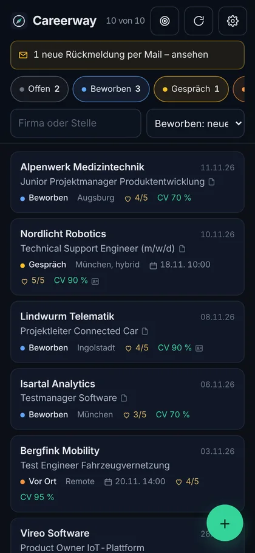
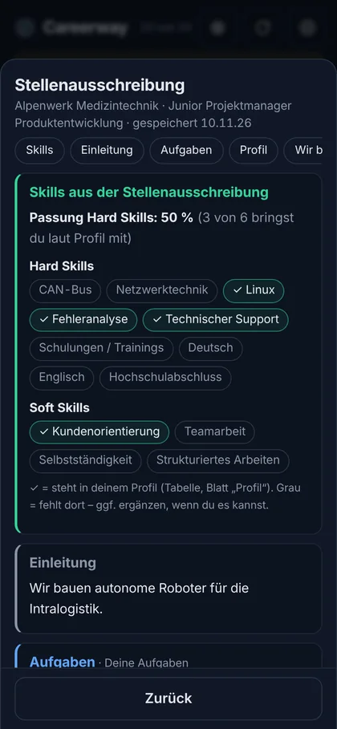
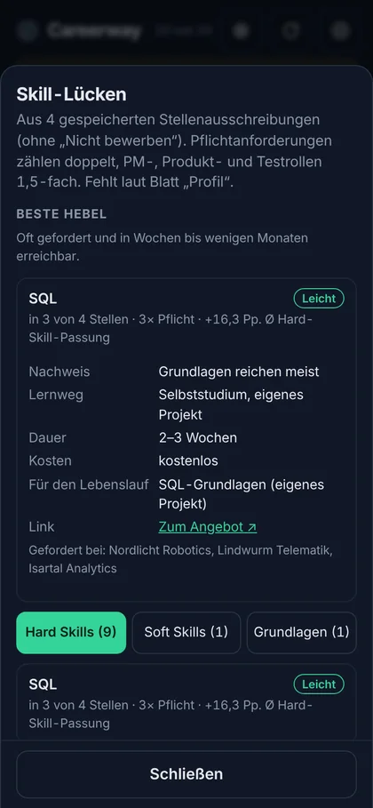

Careerway
A job application tracker that runs on your own Google Sheet. It follows every application and interview, scores how well your CV fits a posting and shows which skills you are missing. No server of my own, no running costs.


The idea
If you apply to many jobs through many portals, you lose track. Postings disappear before the invitation arrives, and across dozens of postings it is hard to see which skills you keep missing.
Careerway keeps all of that in one place. The data stays in your own Google account, and the app works on phone, tablet and desktop. The screens are in German; the app also offers English.

Features
- Status and interviewsEvery application has a status, from not applied to offer or rejected. Several interviews per job, each with date, type and note. Filters, search and sorting.
- Save postings from your phoneAn iOS shortcut stores the full text of a posting from Safari or LinkedIn, so it is still there after the posting disappears.
- Posting in sectionsTasks, profile, benefits, contact person and salary, sorted for easy comparison. The original text is one tap away, and a translation is available on request.
- CV fit (ATS score)A percentage like an applicant tracking system: requirements come from the posting, must-haves count double, and everything is matched against your profile. Claude writes the score with a reason, and the calculation rules are fixed so scores stay comparable.
- Skill gapsCounts which required skills you lack across all saved postings and how often they are must-haves, with a learning path for each gap.
- Gmail check, follow-up, statisticsOptional status suggestions from your inbox, a follow-up hint after ten days, a calendar of interviews and statistics.
- Fast, offline and privateStarts from device storage and saves instantly in the background. Your data stays in your Google account, access needs a random key that is hidden from the address bar, and the public repository contains no private data.


How it works
Web app or shortcut
One static page on GitHub Pages with a service worker, or an iOS shortcut that saves a posting from Safari.
Google Apps Script
Checks the key, then reads and writes the sheet. No server of my own.
Google Sheet
The database, in your own account: applications, postings, profile and learning plan.
Optional extras
Gmail for status hints, Drive for tailored CVs.
Decisions
A Google Sheet as the database
Free, readable even without the app, and the data stays in your account.
Apps Script, no server
It runs for free in the same account and needs no operating.
One HTML file, no build
What is in the repository runs. Tests check the functions one by one.
Save instantly, network second
No waiting after a tap. If Google rejects a change, it is rolled back with a message.
AI helps, a human applies
AI scores postings and suggests CV building blocks. I check every CV and send every application myself.
Go deeper
This page is the short version. Questions about the architecture, the requirements or anything else? The project wiki has the details.